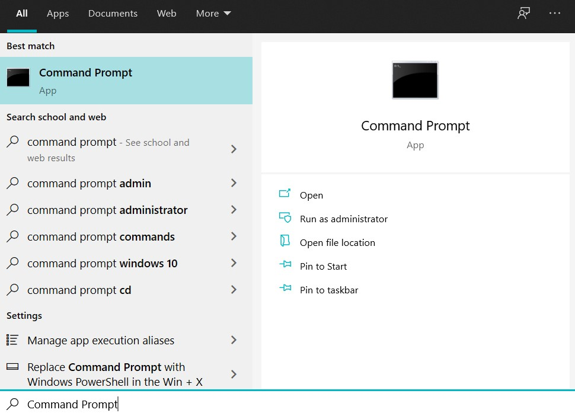
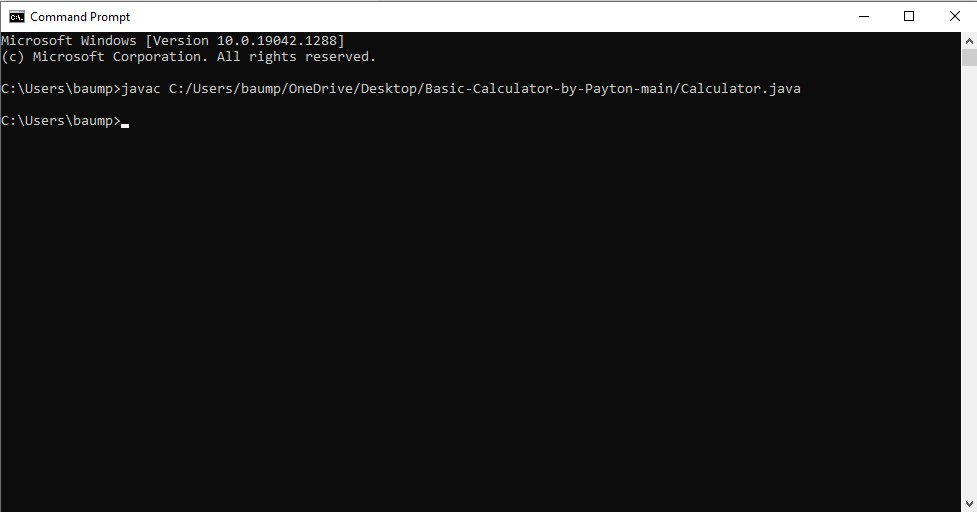
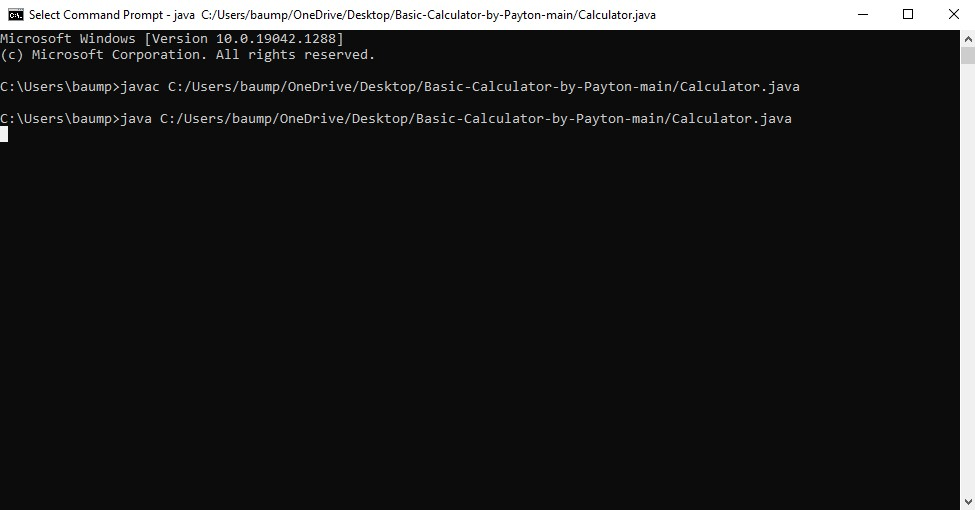
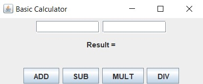

Introduction
The following documentation is intended to help download, run, and operate a basic two-operand calculator application. The calculator application can perform addition, subtraction, multiplication, and division between two operands.
Requirements
-
Terminal - You will need access to your computer’s terminal to run this application.
-
Java JDK (Java Development Kit) - You will need a Java Compiler to compile and run the application files. If you do not already have a Java JDK downloaded on your computer, you can download the proper version for your operating system here.
Download
-
Basic Calculator Application - You can download the Calculator application here. Click the green “Code” box then click “Download Zip.” Extract the files within the ZIP.
It’s recommended that you save the files to a location you have easy access to such as your Desktop.
Directions
-
Check Requirements - Make sure you have the necessary requirements and download the Calculator application file.
-
Open The Terminal - After you’ve downloaded the files and extracted/saved them to an easy-access location, open your terminal. On Windows, this can be done by clicking on the start menu and searching “cmd” or “Command Prompt.”

-
Compile The .java File - In the Command Line, type “javac” followed by a space and the file path/address of the Calculator.java file you downloaded.
Example: “javac C:/Users/baump/OneDrive/Desktop/Basic-Calculator-by-Payton-main/Calculator.java
If you need help locating the file path, on Windows, right click the file and then go down to “Properties.” You will find the file path next to the label “Location:”

-
Run The Java Application - In the Command Line, type “java” followed by a space and the file path/address of the Calculator.java file you downloaded.
This should be the same file path as the previous step.

-
Access Calculator Window - The calculator application should automatically open in a separate window and you’re ready to begin calculating. If you don’t see it, check to see if the window is minimized or hidden on screen.
If you still can’t find it, review the previous steps.

-
Operate The Calculator - To operate the calculator, simply type your first operand into the first blank text box and your second operand in the second blank text box. To apply an operation to the operands, simply click the corresponding button of the desired operation. To perform a different calculation, simply change the numbers in the operand boxes and click an operation button.
FAQ/Troubleshooting
How can I calculate an equation with three or more operands at one time?
Unfortunately, the current build of the basic calculator application only allows for mathematical calculations between two operands at once.
Source Code - Source Code can be found on Github.
Contact:
You can contact the creator via email with any questions, comments, or concerns.
Email: baumpl@appstate.edu